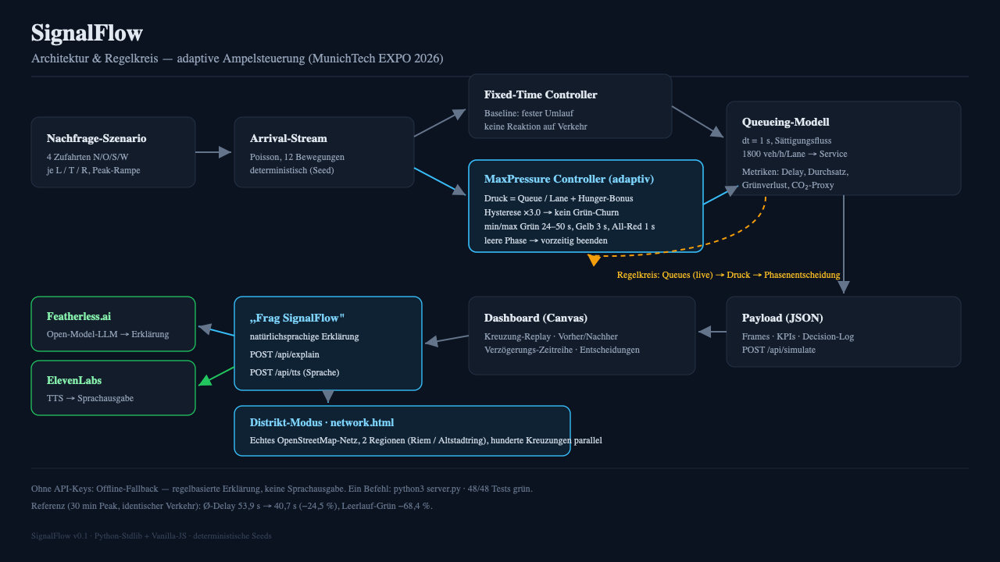

Münchens Ampeln im Expo-Viertel stauen sich zur Rushhour, weil ihre Schaltung fest ist —
ein offline gezeichneter Plan, der die Schlange vor sich nicht sieht. Die Challenge fragt nach einer
Steuerung, die sich live anpasst und den Gewinn zeigt. Zwei Fallen stecken darin: ein System,
das Anpassung nur behauptet, und eines, das nur an einer Kreuzung funktioniert. SignalFlow
schickt denselben Verkehr (gleicher Seed) durch festen Plan und adaptiven Controller —
nebeneinander, Bild für Bild — und skaliert bis auf sechs echte Stadtteilnetze.
2 · Die vier Strategien — und wie sie sich unterscheiden
Der Kern der Auswertung ist ein fairer Vierkampf. Jede Strategie hat eine andere Vorstellung
davon, was eine Ampel wissen darf:
Strategie
Kernidee
Was sie weiß
Live?
Stärke
Schwäche
Fixed-Time
fester Phasenplan nach Webster-Logik (1958)
nichts — nur den Fahrplan
✗
planbar, ohne Sensorik
verschenkt Grün, bricht bei Überraschungen ein
Adaptiv (SignalFlow)
Max-Pressure: Phase mit dem größten Schlangendruck bekommt Grün (Varaiya 2013) + Min-Grün, Hysterese, Früh-Exit
live Warteschlangen aller Richtungen
✓
ungleiche & wechselnde Last
braucht Detektion; im übersättigten Grid begrenzt
Koord. (Grüne Welle)
gemeinsamer Zyklus + Versatz-Offsets entlang des Korridors (MAXBAND-Idee, Little 1981)
schlug auf kurzmaschigen Grids (Berlin, Hamburg) sogar Adaptiv
starr — Baustelle oder Event sieht er nicht
Merksatz: Adaptiv gewinnt fast überall — aber nicht immer gegen einen Plan, der aus
echten Daten gelernt hat. Und genau das zeigen wir, statt es wegzulassen.
3 · Wie die Simulation grob funktioniert
Einzelkreuzung
Warteschlangenmodell im 1-Sekunden-Takt: 4 Zufahrten × (links/gerade/rechts) = 12 Bewegungen,
Poisson-Ankünfte mit Tagesgang, Abfertigung mit Sättigungsfluss (1 800 Fz/h/Spur, PCE-gewichtet),
vier geschützte Phasen. Verzögerung = Σ Schlange · dt; CO₂ als Standzeit-Proxy.
Beide Controller sehen dieselbe Ankunftsreihe.
Stadtteil
Mesoskopisches Link-Queue-Modell auf dem echten OSM-Graphen: jeder Link hat einen
Fahrzeit-Bucket und eine Stop-Line-Schlange; der Abfluss begrenzt Sättigungsfluss,
Stauraum (Spillback, weiche Kappe) und Signalphase. Gravitations-OD + Dijkstra-Routing,
Abbiegeanteile + Exit-Share. Fester 60-s-Zweiphasenzyklus vs. Max-Pressure pro Knoten;
die Welle legt gemeinsamen Zyklus + Fahrzeit-Offsets (× 0,95) auf die längsten Korridoren.
Netzwerke: Messe/ICM Riem (355 Knoten / 569 Links / 58 Signale), Altstadtring
(2597 / 4159 / 708), Berlin Mitte, Hamburg, Köln, Heidelberg — weitere live per OSM-Overpass ladbar.
Ehrlichkeits-Kasten. Der Detektor-Plan Tuned* gewinnt auf kurzmaschigen Grids
(Berlin, Hamburg) sogar gegen Adaptiv; mit zyklusbasiertem Webster-Ansatz schlägt Adaptiv auf
Riem (+8,2 %) und Köln (+2,5 %) erstmals den Orakel-Plan. Diese Befunde stehen unverändert in
docs/results.md —
starke Baselines und gezeigte Niederlagen gehören zur Ehrlichkeit dazu.
5 · Erklärbarkeit
Jeder Phasenwechsel wird mit seinen Drücken protokolliert; /api/explain macht das
Protokoll zu Prosa (Featherless), /api/tts liest es vor (ElevenLabs) — ohne Keys
antwortet ein deterministischer Offline-Erklärer. Darüber hinaus ist /api/agentagentic: Er plant Tool-Aufrufe (simulate, simulate_network,
compare, explain_last), führt sie gegen den echten Simulator aus und
zeigt die komplette Spur in der UI — Antworten kommen aus Läufen, nicht aus der Phantasie des
Modells. Ein Drei-Rollen-Selbstcheck (Analyst → Kritiker → Writer) prüft jede Zahl gegen
die Tool-Ergebnisse; die Anti-Halluzinations-Regel wird im Code durchgesetzt.
AI-Disclosure: Die Entwicklung erfolgte agentisch unterstützt —
Claude-Code-Harness (Modell GLM-5.3-flash), daneben Pi Harness und
AutoClaw Harness. Dank an OpenStreetMap (ODbL), Featherless und
ElevenLabs.
6 · Die Engineering-Story
Der erste adaptive Controller war schlechter als Fixed (+57 % Verzögerung): zu
häufiges Schalten fraß das Grünbudget durch Räumzeit. Fix: Min-Grün, Hysterese, Früh-Exit nur
für leere Phasen, Kalibrierung auf einem Lastgitter.
Die OD-Matrix verlor lautlos 60 % der Nachfrage — unerreichbare Ein-/Ausfahrt-Paare
wurden verworfen. Fix: nur erreichbare Paare, Renormierung.
Angekommene Fahrzeuge fuhren weiter — Abbiegeanteile schickten beendete Trips im
Kreis. Fix: Exit-Share pro Link.
Ein Alias-Bug versteckte sich hinter einem Glückstest — Knoten-IDs wurden über die
Link-ID-Map aufgelöst; auf dem Testgitter überlappten beide zufällig.
7 · Ehrliche Grenzen
Mesoskopisch (kein Car-Following/Spurwechsel/Gap-Acceptance) · CO₂ als Standzeit-Proxy ·
Sättigungsfluss & PCE unkalibriert (vgl. Tarko et al.: ~8–10 % Fehler auch in der Praxis) ·
Detektor-Feed als Datenquelle, Rückkopplung (SCOOT/SCATS-artig) folgt · OD-Generator synthetisch
(die OD-Schätzung aus Zählungen ist implementiert) · Fuß-/Radverkehr nicht modelliert.
8 · Literatur
Transparenz: Diese Literaturverankerung entstand nach der ersten funktionierenden
Version; wir zitieren, worauf das Design sich stützt, und markieren Vereinfachungen. Zahlen sind
Modellausgaben. Vollständige Tabelle:
docs/references.md.
Varaiya, P. (2013).Max pressure control of a network of signalized intersections.
Transportation Research Part C 36, 177–195 — Grundlage des adaptiven Controllers.
Webster, F. V. (1958).Traffic Signal Settings. Road Research Technical Paper 39, HMSO —
klassische Fixed-Time-Logik der Baseline.
Little, J. D. C. et al. (1981).MAXBAND. — Progression/Grüne Welle; unsere Offsets
sind fahrzeitbasiert, kein Bandbreiten-LP.
Levin, M. W. (2019).Max-pressure signal control with cyclical phase structure. —
Anregung für die zyklusgebundene Variante.
Cascetta, E. (1984); Cascetta & Nguyen (1988); Dey et al. (2020). OD-Schätzung aus
Link-Zählungen — Basis des Detektor-Plans (Tuned*).
Hunt et al. (1982, SCOOT); SCATS. — real eingesetzte adaptive Systeme (Stop-Line-Detektoren).
FHWA / HCM. Sättigungsfluss (1 900 pc/h/ln) & PCE-Konzept; wir: 1 800 + unkalibrierte
Tabelle. Tarko et al. zur Vorhersage-Unsicherheit.
NCHRP 572; Kimber (TRL); Song et al. (2022). Kreisverkehr-Kapazität & Gap-Acceptance
(bei uns bewusst nur Näherung).
SignalFlow in einfacher Sprache · MunichTech EXPO 2026
Wartezeit
−24,5 %
an einer Münchner Kreuzung
Grüne Zeit ins Leere
−68 %
kein Grün ohne Autos
In Stadtteilen
−60 bis −80 %
München, Berlin, Hamburg, Köln, Heidelberg
Was ist das Problem?
Viele Ampeln haben einen festen Plan. Der Plan sagt: Erst 30 Sekunden grün für die Straße von
Norden. Dann 30 Sekunden für die Straße von Osten. Immer gleich, den ganzen Tag.
Das Problem: Manchmal wartet kein Auto vor Rot. Dann leuchtet das Grün einfach so ins Leere.
Und die Autos auf der anderen Straße müssen trotzdem warten. Das nervt und kostet Zeit und Benzin.
Was macht SignalFlow?
SignalFlow ist eine Ampel-Steuerung, die schaut. Sie zählt jede Sekunde, vor welcher
Richtung wie viele Autos warten. Dann gibt sie der Richtung grün, vor der der größte Stau steht.
Ist eine Schlange leer, schaltet die Ampel schneller wieder um. Das nennt man adaptiv.
Woher wissen wir, dass es besser ist?
Wir lassen zwei Ampeln gegeneinander antreten: eine mit festem Plan, eine mit SignalFlow.
Beide bekommen genau dieselben Autos. Dann vergleichen wir:
Die Autos warten etwa ein Viertel kürzer (53,9 statt 40,7 Sekunden pro Auto).
68 % weniger grüne Zeit ins Leere.
Weniger Abgas, weil weniger Autos im Leerlauf stehen (etwa 24 % weniger).
In ganzen Stadtteilen warten die Autos 60 bis 80 % kürzer.
Vier Ampel-Typen im Vergleich
Feste Ampel: Sie hat einen Plan und schaut nicht. Einfach — aber sie verschenkt Zeit.
Adaptive Ampel (SignalFlow): Sie schaut live und gibt dem Stau den Vortritt. Gewinnt fast immer.
Grüne Welle: Alle Ampeln einer großen Straße schalten im Gleichtakt. Auf einer langen,
freien Straße toll. Im dichten Innenstadt-Gewirr schlechter.
Gelernte feste Ampel (Tuned*): Sie hat einen festen Plan — aber der Plan wurde aus
echten Zählungen errechnet. In manchen Netzen schlägt sie sogar die adaptive Ampel!
Wir sind ehrlich: Nicht immer gewinnt die adaptive Ampel. Das zeigen wir trotzdem.
Nur so kann man dem Ergebnis vertrauen.
Wer hat das gebaut?
Ein kleines Team beim MunichTech-EXPO-Hackathon, mit Unterstützung von KI — gebaut im
Claude-Code-Harness mit dem Modell GLM-5.3-flash, daneben Pi Harness und AutoClaw
Harness. Aber jede Zahl kommt aus echten Simulations-Läufen, und eine automatische Prüfung
verwirft Antworten mit erfundenen Zahlen. Danke an OpenStreetMap für die Straßen-Daten und
an Featherless und ElevenLabs für ihre Technik.
Munich's signals near the expo district back up at rush hour because their timing is
fixed — a plan drawn up offline, blind to the queue in front of it. The challenge asks for
control that adapts live and proves the gain. Two traps hide in that sentence: a system
that merely claims to adapt, and one that works only at a single intersection. SignalFlow
runs the same traffic (same seed) through a fixed plan and an adaptive controller, side by
side — and scales to six real district networks.
2 · The four strategies — and how they differ
The heart of the evaluation is a fair four-way contest over what a signal is allowed to know:
Strategy
Core idea
What it knows
Live?
Strength
Weakness
Fixed-Time
fixed phase plan from Webster logic (1958)
nothing but the schedule
✗
predictable, sensor-free
wastes green; breaks on surprises
Adaptive (SignalFlow)
max-pressure: serve the phase with the largest queue pressure (Varaiya 2013) + min-green, hysteresis, early exit
live queues of every movement
✓
uneven & shifting demand
needs detection; limited under oversaturation
Coordinated (green wave)
common cycle + platoon-timed offsets along the corridor (MAXBAND idea, Little 1981)
corridor geometry & travel times (static)
✗
clean arterials (Riem: 70.5 s)
loses in dense multi-flow grids
Tuned* (detector plan)
fixed plan tuned from real counts: stop-line counts → OD estimate (Cascetta 1984) → splits
historical detector counts
✗
beats even adaptive on short-link grids (Berlin, Hamburg)
rigid — construction sites and events are invisible
Takeaway: adaptive wins almost everywhere — but not always against a plan that has
learned from real data. We show exactly that instead of hiding it.
3 · How the simulation works, roughly
Single junction
Discrete-time queueing at a 1-second step: 4 approaches × (left/through/right) = 12
movements, Poisson arrivals with a time-of-day profile, saturation-flow service (1 800
veh/h/lane, PCE-weighted), four protected phases. Delay = Σ queue · dt; CO₂ as an idling
proxy. Both controllers face the identical arrival stream.
District
Mesoscopic link-queue model on the real OSM graph: every link carries a free-flow
travel bucket and a stop-line queue; discharge is limited by saturation flow, downstream
storage (spillback, soft cap) and the signal phase. Gravity OD + Dijkstra routing, turning
fractions + exit share. Fixed 60 s two-phase cycle vs. max-pressure per junction; the wave
adds a common cycle + travel-time offsets (× 0.95) on the longest corridors.
Networks: Messe/ICM Riem (355 nodes / 569 links / 58 signals), Altstadtring
(2597 / 4159 / 708), Berlin Mitte, Hamburg, Köln, Heidelberg — more loadable live via Overpass.
Honesty box. The detector plan Tuned* beats adaptive on short-link grids (Berlin,
Hamburg); with the opt-in Webster cycle, adaptive beats the oracle plan on Riem (+8.2 %) and
Köln (+2.5 %) for the first time. These findings stand unedited in
docs/results.md —
strong baselines and visible losses are part of being honest.
5 · Explainability
Every phase switch is logged with its pressures; /api/explain turns the log into
prose (Featherless) and /api/tts speaks it (ElevenLabs) — without keys, a
deterministic offline explainer answers. Beyond narration, /api/agent is
agentic: it plans tool calls (simulate, simulate_network,
compare, explain_last), runs them against the real simulator and shows
the full trace in the UI — answers come from runs, not imagination. A three-role self-check
(analyst → critic → writer) verifies every number against tool results; the anti-hallucination
rule is enforced in code.
AI disclosure: development was agent-assisted — Claude Code harness
(model GLM-5.3-flash), plus Pi Harness and AutoClaw Harness. Thanks to
OpenStreetMap (ODbL), Featherless and ElevenLabs.
6 · The engineering story
The first adaptive controller was worse than fixed (+57 % delay): switching too often
let clearance time eat the green budget. Fix: min-green, hysteresis, early exit only for empty
phases, grid calibration.
The OD matrix silently lost 60 % of demand — unreachable entry→exit pairs were
dropped. Fix: reachable pairs only, renormalisation.
Arrived vehicles kept driving — turning fractions sent terminating trips in circles.
Fix: an exit share per link.
Two-way streets deadlocked — hard storage limits jammed link pairs. Fix: a soft cap
(× 1.35).
An aliasing bug hid behind a lucky test — node ids resolved via the link-id map
happened to work on the test grid.
7 · Honest limitations
Mesoscopic (no car-following/lane-changing/gap acceptance) · CO₂ as an idling proxy ·
saturation flow & PCE uncalibrated (cf. Tarko et al., ~8–10 % error in practice) · detector
feed as a demand source, closed-loop feedback to come · synthetic OD generator (OD estimation
from counts is implemented) · pedestrians and cyclists not modelled.
8 · References
Transparency: this grounding was compiled after the first working version; we
cite what the design leans on and mark simplifications. Numbers are model output. Full table:
docs/references.md.
Varaiya, P. (2013).Max pressure control of a network of signalized intersections.
Transportation Research Part C 36, 177–195 — basis of the adaptive controller.
Webster, F. V. (1958).Traffic Signal Settings. Road Research Technical Paper 39, HMSO —
the classical fixed-time baseline.
Little, J. D. C. et al. (1981).MAXBAND. — progression/green wave; our offsets are
travel-time-based, not a bandwidth LP.
Levin, M. W. (2019).Max-pressure signal control with cyclical phase structure. —
cycle-constrained variant.
Cascetta, E. (1984); Cascetta & Nguyen (1988); Dey et al. (2020). OD estimation from
link counts — basis of the detector plan (Tuned*).
Hunt et al. (1982, SCOOT); SCATS. — deployed adaptive systems (stop-line detectors).
FHWA / HCM. Saturation flow (1 900 pc/h/ln) & PCE concept; we use 1 800 + an
uncalibrated table. Tarko et al. on prediction uncertainty.
NCHRP 572; Kimber (TRL); Song et al. (2022). Roundabout capacity & gap acceptance
(deliberately approximated here).
A traffic light that watches where the cars are waiting
SignalFlow in simple language · MunichTech EXPO 2026
Waiting time
−24.5 %
at one Munich junction
Green for nobody
−68 %
no green without cars
In districts
−60 to −80 %
Munich, Berlin, Hamburg, Cologne, Heidelberg
What is the problem?
Many traffic lights follow a fixed plan. The plan says: first 30 seconds green for the road
from the north. Then 30 seconds for the road from the east. The same, all day long.
The problem: sometimes no cars are waiting at a red light. The green light shines for nobody.
And the cars on the other road still have to wait. That is annoying. It wastes time and fuel.
What does SignalFlow do?
SignalFlow is a traffic-light control that watches. Every second it counts how many cars
wait in each direction. Then it gives green to the direction with the biggest queue. When a queue
is empty, the light switches sooner. This is called adaptive.
How do we know it is better?
We let two traffic lights compete: one with a fixed plan, one with SignalFlow.
Both get exactly the same cars. Then we compare:
Cars wait about a quarter less (53.9 down to 40.7 seconds per car).
68 % less green time wasted on empty streets.
Less exhaust, because fewer cars sit idling (about 24 % less).
Across whole districts, waiting time drops by 60 to 80 %.
Four kinds of traffic lights
The fixed light: it has a plan and never looks. Simple — but it wastes time.
The adaptive light (SignalFlow): it watches live and gives the queue the right of
way. Wins almost always.
The green wave: all lights on one big road switch in the same rhythm. Great on a
long, free road. Worse in a dense city centre.
The learned fixed light (Tuned*): it also has a fixed plan — but the plan was
computed from real counting-loop data. In some networks it even beats the adaptive light!
We are honest: the adaptive light does not always win. We show that anyway. That is how
the results stay trustworthy.
Who built this?
A small team at the MunichTech EXPO hackathon, with help from AI — built with the Claude
Code harness running the GLM-5.3-flash model, plus Pi Harness and AutoClaw Harness.
But every number comes from real simulation runs, and an automatic check rejects any answer
with made-up numbers. Thanks to OpenStreetMap for the street data and to Featherless and
ElevenLabs for their technology.
Für die Jury: Architektur, Sponsoren, Bewertungs-Mappe
Die Compact-Fassung für Jurys und Voting — alles, was zählt, auf einer Seite.
MunichTech EXPO 2026Smart Cities: Adaptive Traffic Flow
Architektur

Datenfluss: Nachfrage (Modell oder Sensor-CSV) → identische Ankunftsreihe → zwei Controller
(Fixed / Max-Pressure) → stdlib-Server mit Cache → Browser-Dashboards; Featherless und ElevenLabs sitzen
als Erklär-/Stimm-Schicht über den Ergebnissen — jede Zahl bleibt Simulator-Output.
Ein-Befehl-Stack
Python 3.11+ Standardlib only (kein pip, kein Build) + Vanilla-JS-Frontend.
python3 server.py → http://127.0.0.1:8000.
Deterministisch über Seed, 108/108 Tests, Datenträger-Cache macht die Demo instant.
Reproduzierbarkeit
Jede Zahl der Writeups/Tables ist über python3 -m signalflow.simulation bzw.
tools/od_experiment.py nachrechenbar; gleicher Seed für Fixed und Adaptiv —
der Vergleich ist fair per Konstruktion.
Wo die Sponsor-Technologie eingesetzt wird
Featherless — LLM-API
/api/explain macht das Decision-Log zu Prosa · /api/agent plant Tool-Aufrufe
(simulate, simulate_network, compare) gegen den echten Simulator · Weekly Report
schreibt die Zusammenfassung — mit Zahlengate im Code (halluzinierte Zahlen werden verworfen).
Ohne Key: deterministischer Offline-Erklärer.
Kategorie „Best Project Built with Featherless” ($300)
ElevenLabs — Sprachausgabe
/api/tts liest Ergebnisse und Agent-Antworten vor („🔊 Ergebnis vorlesen”,
„🔊 Vorlesen”, Auto-Vorlesen nach jedem Lauf) — Stimme als
First-Class-Interface, nicht Anhängsel. Ohne Key: Text bleibt, Ton deaktiviert.
Kategorie „Best Project Built with ElevenLabs” (bis 6 mo Scale)
CSV-Zählfeed-Modus (Datei oder URL, Detektor-Dropout) — Herausforderungstext wörtlich erfüllt
AI-Stack — vollständige Disclosure
Agent-Harness: Claude CodeModell: GLM-5.3-flashHarness: Pi HarnessHarness: AutoClaw HarnessRegel: jede Zahl aus Simulator-Läufen
Die Entwicklung erfolgte agentisch unterstützt (Claude-Code-Harness, angetrieben von
GLM-5.3-flash; daneben Pi Harness und AutoClaw Harness). Die Anti-Halluzinations-Haltung ist
nicht nur Prosa: der Agent-Modus prüft jede Zahl gegen die Tool-Ergebnisse, nicht
gedeckte Zahlen werden im Code verworfen — inklusive der Wochenbericht-Zusammenfassung.
Danksagung
Danke den OpenStreetMap-Mitwirkenden (ODbL) für die Straßennetze, Featherless
für die LLM-API, ElevenLabs für die Stimme — und dem MunichTech-EXPO-Team für die
Challenge. Fehler sind unsere; die Daten und Dienste machen das Projekt erst real.